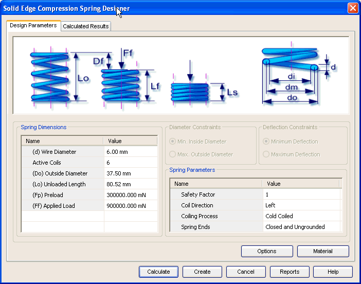

Compression Spring Design Parameters tab
The Design Parameters tab provides the options you use to enter details required for the design of compression spring. This tab consists of 4 areas.

Defines the parameters used in the design of the compression spring. The required deflection, preload length and the number of coils are some of the important parameters that you provide through this area.
Defines additional parameters used in the design of compression spring. These parameters are used as design constraints. Use the options provided above this area to set these constraints. The coil direction and Coiling Process are some of the important parameters you provide through this area.
Use the options button to select the type of loading, design criteria and other design constraints.
Use the Material button to select the material of spring.
Learn more
Compression Spring moduleUsing the Compression Spring module
Compression Spring Calculated Results tab
Compression Spring Material selection
Compression Spring tutorial
How to (Compression Springs)
Frequently asked questions (Compression Springs)
Standards used for Compression Spring calculations